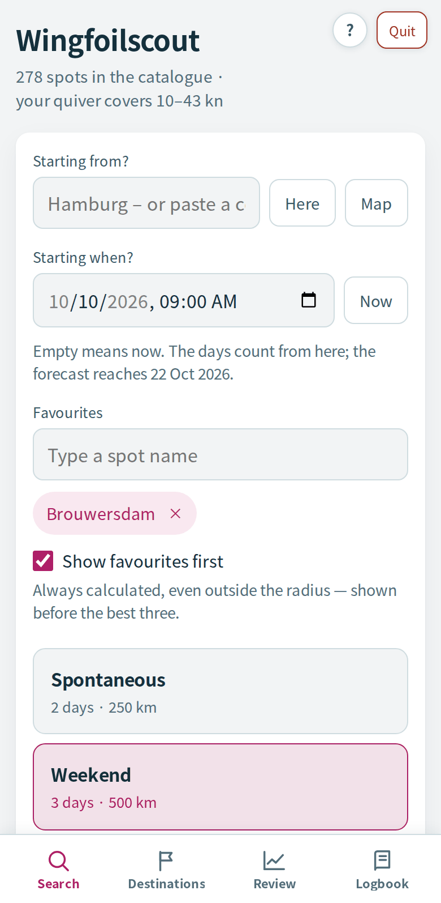
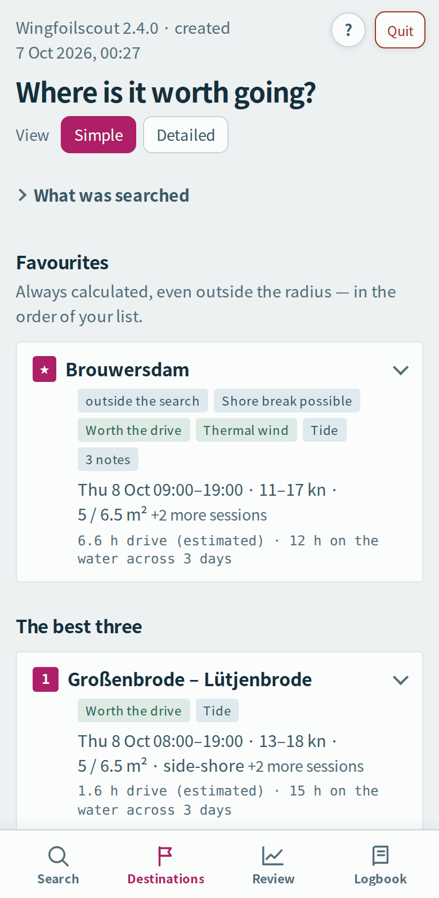
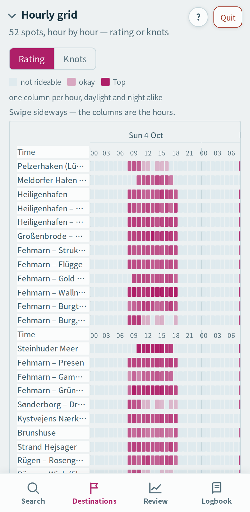

Example view with made-up weather data · starting point Hamburg
See it in action
Each video loads only when you press play.
What’s inside
Not a black box that spits out a number: Wingfoilscout combines weather models with what you need to know about a spot – which wind directions work there, how much open water lies in front of it, and whether tide or thermal wind plays a part.
North Sea, Baltic, Atlantic, Channel, Mediterranean and lakes – maintained by hand, mostly with their source, editable in the Catalogue. Missing one? Suggest it for everyone.
ICON, GFS and ECMWF via Open-Meteo, plus regional models. The ensemble tells you how reliable a session is.
Shoreline geometry from OpenStreetMap, every 10 degrees: onshore, side-shore or offshore, fetch and wave height.
Tide state for the hour shown (from a model, not an official tide table) and thermal-wind knowledge for known spots.
Routed, not guessed – and weighed against your hours on the water. Overnight spots nearby come with it.
Forecasts checked against measurements from DWD, KNMI, Rijkswaterstaat, GeoSphere, DMI and Météo-France. The Logbook learns from your sessions.
How to start
Wingfoilscout runs on your Mac and opens in your browser – in English, German, French or Spanish, following your browser’s language until you pick one yourself. Your iPhone can join over the same Wi-Fi (use the start file with “iPhone” in its name); the Mac does the computing.
Open Terminal
It’s in Applications → Utilities, or type “Terminal” into Spotlight. Two lines to paste – that’s all it takes.
Apple’s command line tools – once per Mac
They bring Python and git. Paste this line and press Return:
xcode-select --install
In the window that appears, click “Install”, accept the licence and wait until it’s done – a few minutes. If Terminal says they’re already installed, go on.
Fetch and start
Paste this line – all of it at once:
cd ~ && git clone https://github.com/DarkPirateGo/wingfoilscout.git && cd wingfoilscout && bash "Wingfoilscout starten.command"
It creates the folder
wingfoilscoutin your home folder, installs its only extra package (PyYAML) and opens the app in your browser. From then on, double-click Wingfoilscout starten in that folder (German for “start Wingfoilscout”); Neuen Stand holen gets new versions.Set up and search
Choose your starting point in the app – and, if you plan ahead, a start time; type in your favourite spots, and with “Show favourites first” every search checks them too, even outside the radius. The language switcher (DE · EN · FR · ES) sits next to the logo and version number at the top right (on phones, in the page footer). Enter your wings once in
config.yaml– a text file in the same folder, created on first start; each wing gets its size in m² and its wind range in knots. Then hit “Find spots”.
Rather without Terminal? On the releases page, under “Assets”, download Source code (zip), unzip it and double-click Wingfoilscout starten.command. The first time, macOS refuses because the file comes from the internet unsigned: click “Done”, open System Settings → Privacy & Security, scroll down to Security, click “Open Anyway” and then “Open” (up to macOS 14, right-click → Open is enough). If it offers the command line developer tools, install them and double-click again. Each double-click file needs this once, and new versions come as a new ZIP.
The Python package is still called wingscout, the project’s name until version 2.0. On Windows there is wingfoilscout.bat – untested there so far.
Transparent, not guesswork
Every threshold, every weighting and every exclusion is out in the open: which hours qualify at all, how the rating is built from wind, direction, water, weather and gustiness, when hours become a session, and why one destination ranks above another.
How Wingfoilscout calculates – illustrated · SCORING.md – the same walk-through as text · Example report – what a result looks like.
Good to know
- It doesn’t replace looking at the water. Forecasts can be wrong, spots change, and local rules apply on site – protected areas, swimming zones, dogs, access.
- Built and tested on a Mac only. Your iPhone joins over Wi-Fi; Windows is untested.
- Drive times can be estimates. The Python that comes with the Mac is built
against LibreSSL 2.8.3 from 2018 and can’t connect to the routing server; the drive time is
then estimated from the straight-line distance and marked “(estimated)” in the report – weather
and report are not affected. A current Python (
brew install pythonor the installer from python.org) fixes it. - The data comes from free services – Open-Meteo, OpenStreetMap, OSRM, national weather services – under their terms of use. Wingfoilscout asks sparingly and caches what it gets.
- No account, no ads, no tracking. What you enter is stored only on your computer.